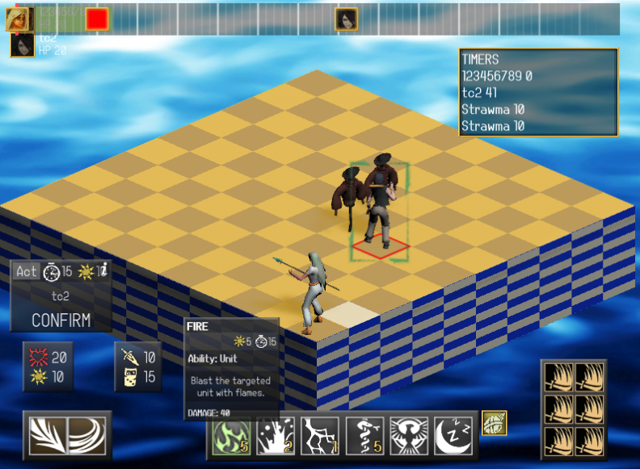
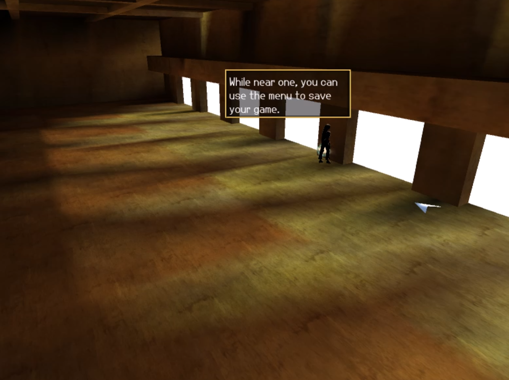
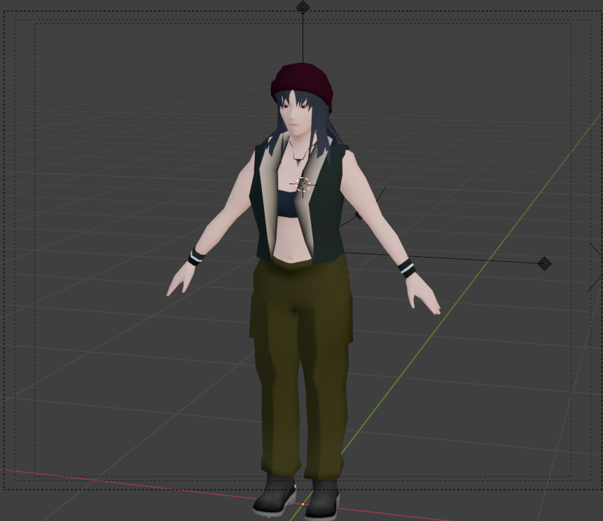
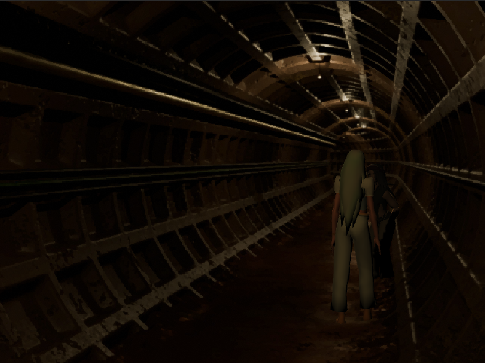
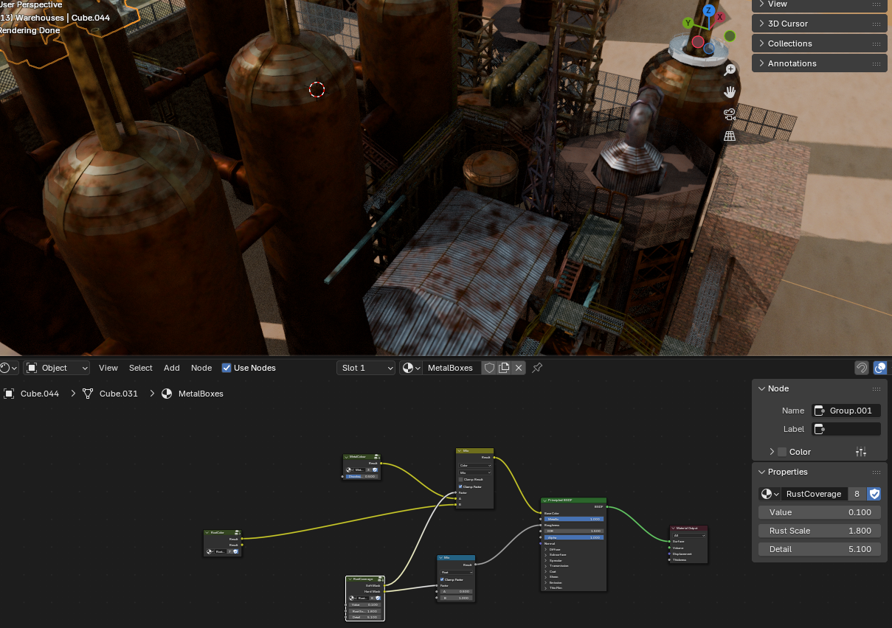
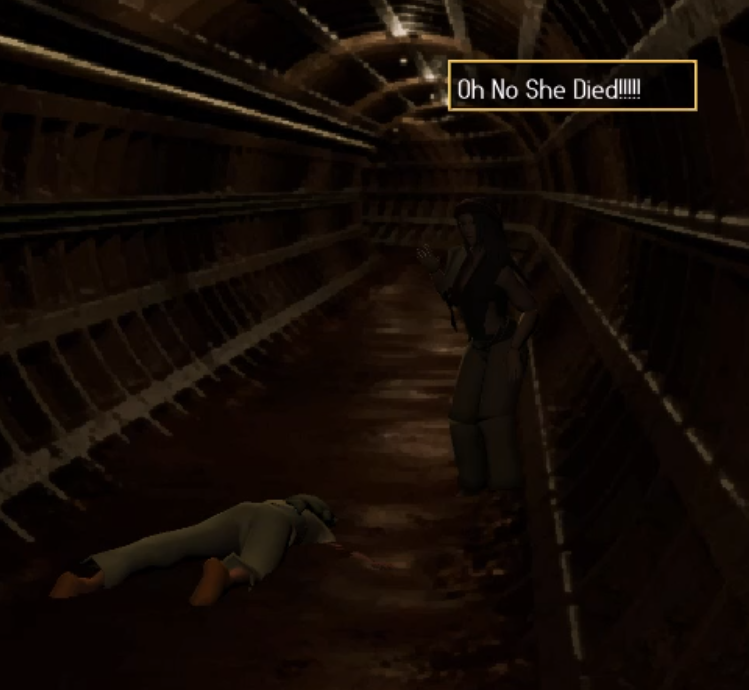
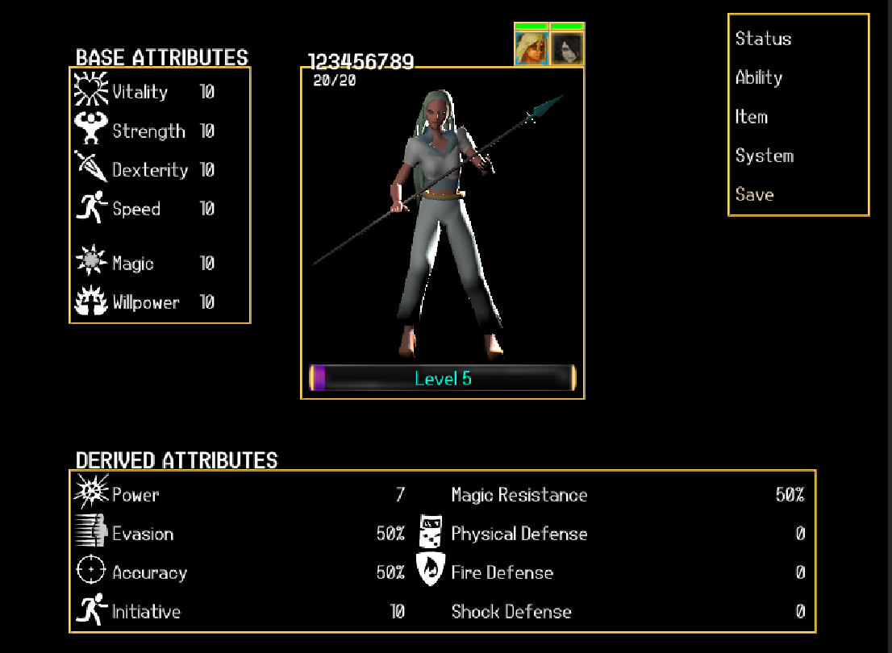

Turn Based RPG
Production
Gameplay
This game features navigable environments, and turn-based battles.


Graphics


This game uses vertex coloured models, because they can be quickly painted. They are superimposed onto far more detailed pre-rendered backgrounds.
Environment


The environments have far more detail than the characters due to being built and rendered in Blender. This means I can directly shape a scene in my 3D viewport, use procedural models and textures, and import the same look into Unity. Both Orthographic and Perspective rendered scenes are supported.
Scripting
An Assembly-Like language can be used to script dialogue sequences and cutscenes.
ACTOR Corpse //Select Actor
ANIMW Death //Play Anim And Wait on Completion
WAIT 0.5 //Wait time
DIAL 6 //Play Dialogue 6
ACTOR PLAYER
EFFECT GHOST 0.7 //Transparency
SHOW 1
STOI GHOST 1 //Store variable named GHOST
ANIM Revive
WAIT 3.5
ANIM RESET
RESUME
LBL END
END

User Interface
The game features RPG stat tracking, menu screens, and a 3d character preview
